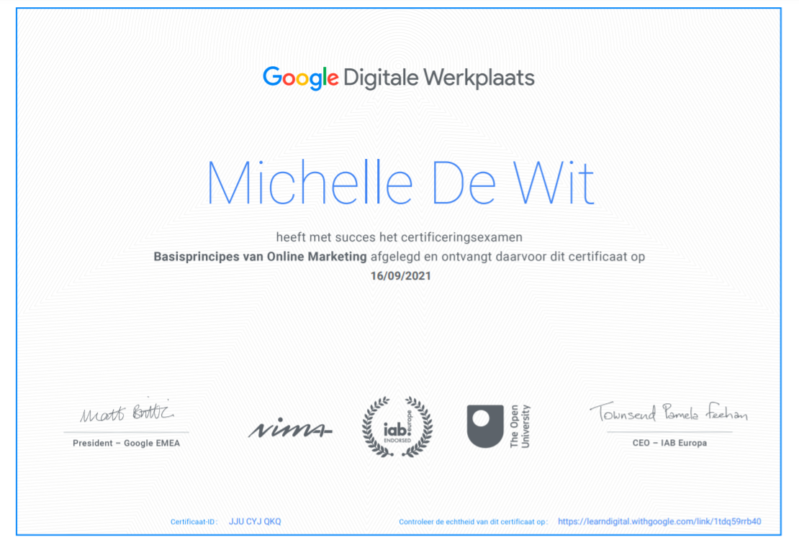

Voorafgaand aan het semester had ik nog
weinig kennis van SEO, om hier kennis
mee te maken heb ik de digitale werkplaats cursus basisprincipes van online marketing gevolgd.
Aanpak
Aan het begin van het semester was mijn kennis van digitale marketing nog
erg laag. Van mijn semester coach Pauline kreeg ik daarom de tip om het certificaat "basisprincipes van
online marketing" te halen. In deze cursus komen de verschillende facetten van digitale marketing naar boven
zoals SEO, social media marketing, display marketing etc.
Conclusie
Uiteindelijk heb ik het certificaat "Basisprincipes van online marketing"
behaald.

Reflectie
Op papier stond er een duur van de cursus van 40 uur. Maar ik denk dat hier een stuk sneller doorheen gegaan
dan gedacht. Van sommige onderdelen zoals social media wist ik toch meer dan ik aanvankelijk dacht.
Het meest interessante en nuttige onderdeel van de cursus vond ik SEO. Er werd door de cursus uitgebreid
ingegaan op de werking van zoekmachines, technische SEO en content gericht op SEO. Hierdoor heb ik kennis
kunnen maken met deze onderdelen en kan ik deze kennis weer toepassen in de aankomende projecten.
Het minst interessante van de cursus vond ik het onderdeel "de mogelijkheden van een website en een website
op mobiel". Hier ben ik al vaker mee in aanraking geweest waardoor de informatie niet meer nieuw was.